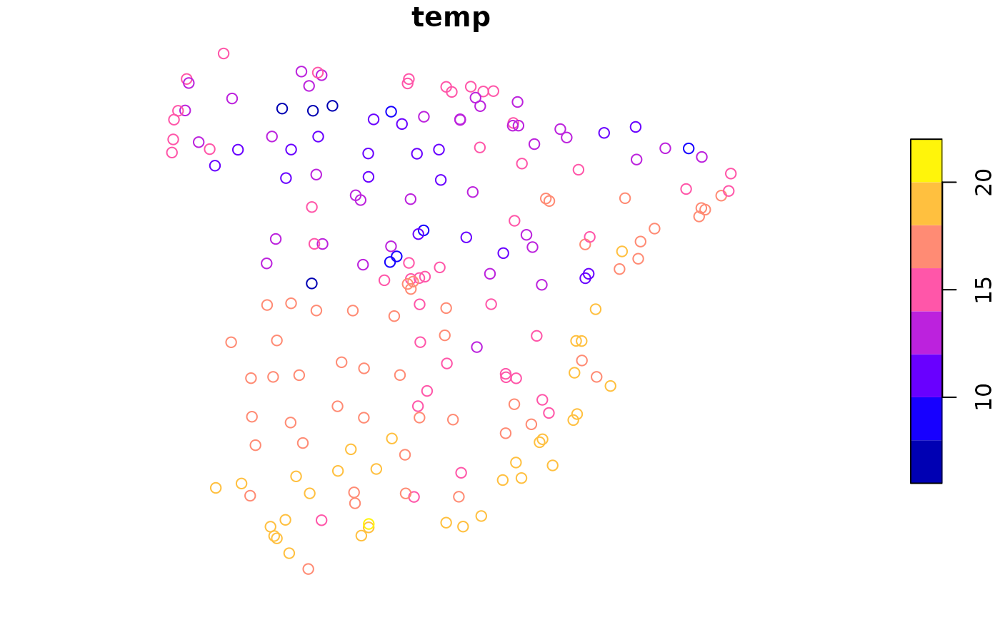
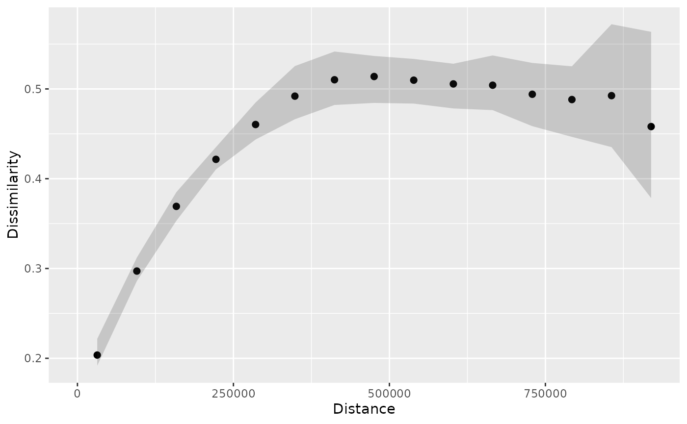
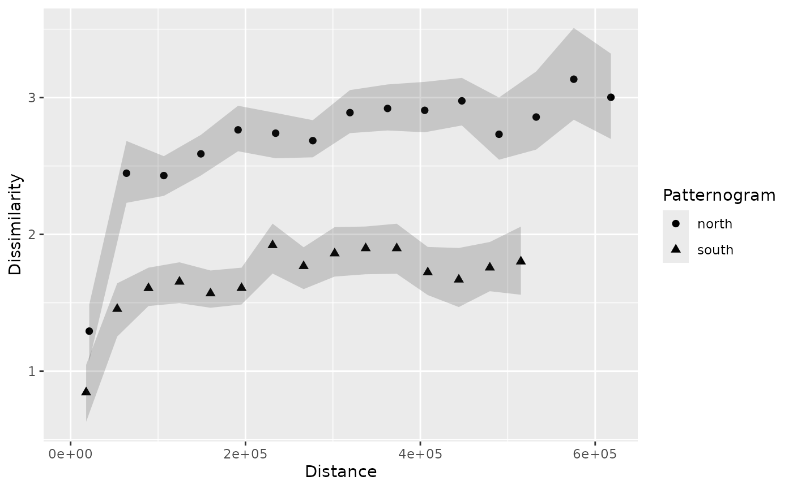

Customizations and additional features of the patternogram package
Jakub Nowosad
2025-09-30
Source:vignettes/articles/customizations.Rmd
customizations.RmdThe patternogram package provides tools for visual exploration of spatial autocorrelation of values from a set of points or a raster object. This vignette shows various customizations and additional features available in the package. It extends the introduction provided in the An introduction to patternogram vignette.
Let’s start by attaching the necessary packages.
Next, we load two spatial datasets. The first one is a spatial vector
point dataset with annual average air temperature measurements in
Celsius for Spain in 2019. The second one is a raster dataset with
predictors, such as population density (popdens), distance
to the coast (coast), elevation (dem), a
satellite-based Normalized Difference Vegetation Index
(ndvi), and annual average composites of the Land Surface
Temperature product for day (lst_day) and night
(lst_night).
temp_train = read_sf("/vsicurl/https://github.com/Nowosad/IIIRqueR_workshop_materials/raw/refs/heads/main/data/temp_train.gpkg")
plot(temp_train)
predictors = rast("/vsicurl/https://github.com/Nowosad/IIIRqueR_workshop_materials/raw/refs/heads/main/data/predictors.tif")
plot(predictors, axes = FALSE)
Patternograms of point data
The patternogram() function is the main function of the
package – it calculates the relationship between spatial distance and
dissimilarity of values and returns an object of the
patternogram class. When the first argument is a set of
points, the function calculates distances between all pairs of points
and dissimilarities between their values.
p_tt = patternogram(temp_train)
p_tt
#> # A patternogram: 15 × 3
#> np dist dissimilarity
#> * <int> <dbl> <dbl>
#> 1 334 30200 1.72
#> 2 910 90700 2.10
#> 3 1289 151000 2.27
#> 4 1622 211500 2.49
#> 5 1883 272000 2.60
#> 6 2081 332000 2.83
#> 7 1984 392500 3.25
#> 8 1914 453000 3.45
#> 9 1721 513000 3.54
#> 10 1446 573500 3.85
#> 11 1201 634000 4.06
#> 12 986 694500 4.38
#> 13 763 755000 4.00
#> 14 467 815000 3.89
#> 15 215 875500 3.52
plot(p_tt)
The result of plotting a patternogram is a scatter plot showing the
dissimilarity of values for different spatial distances. However, often
our point datasets are a sample of a larger population and, moreover,
their values may be subject to measurement errors. Therefore, it is
useful to estimate and visualize confidence intervals
of the dissimilarity estimates. To do this, we can set the
interval argument to "confidence".
p_tt_ci = patternogram(temp_train, interval = "confidence")
p_tt_ci
#> # A patternogram: 15 × 5
#> np dist dissimilarity ci_lower ci_upper
#> * <int> <dbl> <dbl> <dbl> <dbl>
#> 1 334 30200 1.72 1.54 1.93
#> 2 910 90700 2.10 1.98 2.21
#> 3 1289 151000 2.27 2.17 2.37
#> 4 1622 211500 2.49 2.41 2.58
#> 5 1883 272000 2.60 2.50 2.69
#> 6 2081 332000 2.83 2.76 2.92
#> 7 1984 392500 3.25 3.15 3.35
#> 8 1914 453000 3.45 3.36 3.58
#> 9 1721 513000 3.54 3.43 3.69
#> 10 1446 573500 3.85 3.71 3.96
#> 11 1201 634000 4.06 3.94 4.17
#> 12 986 694500 4.38 4.23 4.52
#> 13 763 755000 4.00 3.82 4.17
#> 14 467 815000 3.89 3.72 4.08
#> 15 215 875500 3.52 3.24 3.81
plot(p_tt_ci)Now, the resulting patternogram contains two additional columns with
lower and upper confidence intervals of the dissimilarity estimates
(ci_lower and ci_upper). These intervals are
also automatically visualized in the plot.
When the interval argument is set to
"confidence", the function uses a bootstrap approach to
estimate confidence intervals. By default, it uses 100 bootstrap samples
and a confidence level of 0.95; however, we may customize these settings
using the interval_opts argument. In the next example, we
set the confidence level to 0.99 and the number of bootstrap samples to
250.
p_tt_ci2 = patternogram(temp_train, interval = "confidence",
interval_opts = list(conf_level = 0.99,
n_bootstrap = 250))
plot(p_tt_ci2)Now, you may notice that the confidence intervals are wider than in the previous example, which is expected when we increase the confidence level.
Patternograms of raster data
The raster variables have different units and ranges of values, so we need to standardize them before calculating the patternogram. Otherwise, the variables with larger ranges will dominate the dissimilarity calculations. To standardize the variables, we can use min-max normalization, which rescales the values of each variable to a range between 0 and 1.
nx = minmax(predictors)
pr = (predictors - nx[1, ]) / (nx[2, ] - nx[1, ])Similarly to the point data, we can calculate a patternogram for the
raster data using the patternogram() function. In this
case, the function randomly samples a specified number of points from
the raster (500, by default) and calculates distances and
dissimilarities between all pairs of these sampled points.
p_pr = patternogram(pr)
p_pr
#> # A patternogram: 15 × 3
#> np dist dissimilarity
#> * <int> <dbl> <dbl>
#> 1 2804 31700 0.204
#> 2 7584 95200 0.290
#> 3 10666 158500 0.363
#> 4 12846 222000 0.408
#> 5 13992 285500 0.445
#> 6 14420 348500 0.472
#> 7 14077 412000 0.493
#> 8 12624 475500 0.494
#> 9 10989 539000 0.487
#> 10 9069 602500 0.492
#> 11 7064 665500 0.489
#> 12 4693 729000 0.472
#> 13 2359 792500 0.490
#> 14 979 856000 0.502
#> 15 387 919500 0.497
plot(p_pr)Here, we also could estimate confidence intervals of
the dissimilarity estimates – we just need to set the
interval argument to "confidence".
p_pr_ci = patternogram(pr, interval = "confidence")
p_pr_ci
#> # A patternogram: 15 × 5
#> np dist dissimilarity ci_lower ci_upper
#> * <int> <dbl> <dbl> <dbl> <dbl>
#> 1 2937 31700 0.196 0.192 0.201
#> 2 7506 95200 0.286 0.283 0.289
#> 3 10604 158500 0.363 0.361 0.366
#> 4 12836 222000 0.413 0.410 0.415
#> 5 14521 285500 0.466 0.462 0.469
#> 6 14954 348500 0.499 0.496 0.502
#> 7 14711 412000 0.515 0.512 0.519
#> 8 12963 475500 0.512 0.508 0.515
#> 9 11187 539000 0.496 0.492 0.499
#> 10 8630 602500 0.497 0.495 0.502
#> 11 6118 665500 0.507 0.502 0.511
#> 12 4097 729000 0.502 0.498 0.508
#> 13 2285 792500 0.488 0.481 0.495
#> 14 993 856000 0.469 0.458 0.481
#> 15 345 919500 0.430 0.409 0.453
plot(p_pr_ci)
The above patternogram shows the wider confidence intervals for larger distances, which is expected because there are fewer point pairs at larger distances.
Another option for estimating intervals is to use uncertainty
intervals, which account for the uncertainty of the sampling
process. Such intervals are estimated using a Monte Carlo approach,
where the sampling of points from the raster is repeated multiple times.
To estimate uncertainty intervals, we need to set the
interval argument to "uncertainty" and to
customize the confidence level and the number of Monte Carlo
repetitions, we may use the interval_opts argument.
p_pr_ui = patternogram(pr, interval = "uncertainty",
interval_opts = list(conf_level = 0.99,
n_montecarlo = 100))
p_pr_ui
#> # A patternogram: 15 × 5
#> np dist dissimilarity ui_lower ui_upper
#> * <int> <dbl> <dbl> <dbl> <dbl>
#> 1 2872 31700 0.204 0.192 0.222
#> 2 7623 95200 0.297 0.286 0.312
#> 3 10998 158500 0.369 0.353 0.385
#> 4 13131 222000 0.422 0.410 0.435
#> 5 14415 285500 0.460 0.444 0.485
#> 6 14741 348500 0.492 0.466 0.525
#> 7 14170 412000 0.510 0.482 0.542
#> 8 12862 475500 0.514 0.484 0.537
#> 9 10917 539000 0.510 0.484 0.533
#> 10 8666 602500 0.506 0.478 0.528
#> 11 6481 665500 0.504 0.476 0.537
#> 12 4226 729000 0.494 0.459 0.529
#> 13 2255 792500 0.488 0.447 0.525
#> 14 958 856000 0.493 0.435 0.572
#> 15 343 919500 0.458 0.378 0.564
plot(p_pr_ui)
Combining patternograms
We may want to compare patternograms calculated for different
datasets or using different settings. To present such comparisons, let’s
split the temp_train dataset into two subsets: one with
points located in the northern part of Spain and another one with points
located in the southern part of Spain.
temp_train_north = subset(temp_train, st_coordinates(temp_train)[,2] > 4420000)
temp_train_south = subset(temp_train, st_coordinates(temp_train)[,2] <= 4420000)Next, we calculate patternograms for these two subsets.
p_tt_north = patternogram(temp_train_north, interval = "confidence")
p_tt_south = patternogram(temp_train_south, interval = "confidence")The resulting patternograms can be combined into a single object
using the c() function. It accepts multiple patternogram
objects and an optional ids argument, which allows us to
specify labels for each patternogram. The resulting object is also of
the patternogram class and can be plotted using the
plot() function.
p_pr_both = c(p_tt_north, p_tt_south, ids = c("north", "south"))
p_pr_both
#> # A patternogram: 30 × 6
#> np dist dissimilarity ci_lower ci_upper id
#> <int> <dbl> <dbl> <dbl> <dbl> <chr>
#> 1 111 21300 1.29 1.07 1.49 north
#> 2 333 63900 2.45 2.23 2.68 north
#> 3 390 106600 2.43 2.28 2.57 north
#> 4 499 149000 2.59 2.43 2.73 north
#> 5 581 191500 2.76 2.61 2.94 north
#> 6 634 234500 2.74 2.56 2.89 north
#> 7 687 277000 2.69 2.56 2.83 north
#> 8 701 319500 2.89 2.74 3.05 north
#> 9 619 362500 2.92 2.76 3.10 north
#> 10 514 405000 2.91 2.75 3.11 north
#> # ℹ 20 more rows
plot(p_pr_both)
The resulting plot shows that the dissimilarity estimates for the northern part of Spain are generally higher than those for the southern part. It means that the temperature values in the northern part of Spain are more diverse than those in the southern part. This observation may be related to the fact that the northern part of Spain has a more varied terrain, including mountains and coastal areas, which can lead to greater temperature variability.